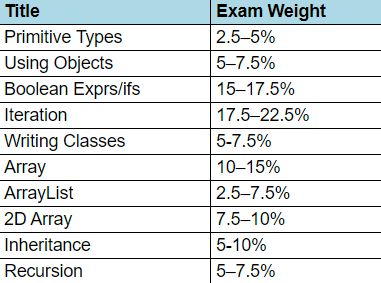

As I begin to prepare for the upcoming AP Computer Science exam in May, I thought that writing this blog post would be creative way to review and share what I have learned over the course of this year in my class.
This post will take you through everything that I am reviewing to prepare for the exam. To preface, I am taking AP Computer Science A, which is taught in Java. I would also like to add that I do not claim myself to be an expert exam taker, or even a Java expert. I am just a student reviewing for an exam.
While Java isn't necessarily my favorite programming language, it teaches the basics of object-oriented programming, and programming in general, very well. While I did have programming experience, I had zero Java experience going into this school year. If I would say anything about the class itself, I would say that the focus wasn't as much on the actual syntax of the language, but on the fundamentals of programming. This is reflected in the exam as well. Most syntax errors on the exam don't even result in point deductions!
This image shows all the topics that are tested on the exam and their corresponding exam weight. The higher the weight, the more the topic appears on the exam.
In this guide, I will go through all of the core topics that are taught in class, and tested on the exam. I will also throw in some other helpful tips and concepts that aren't specifically tested on the exam, but are extremely helpful to know about.
I will do my best to review concepts using snippets of code, as well as explanations and images. Towards the end of each section, I included a few practice questions that will highlight the concepts discussed previously. At the end of this post, I have also included two practice FRQ explanations, as well as a list of resources that are also helpful to review.
Without further ado, lets get started!
Like any other programming language, our first program in Java must be to print Hello World! It's tradition.
public static void main(String[] args) {
System.out.println("Hello World!");
// the classic hello world program
// by the way, this is a comment
}